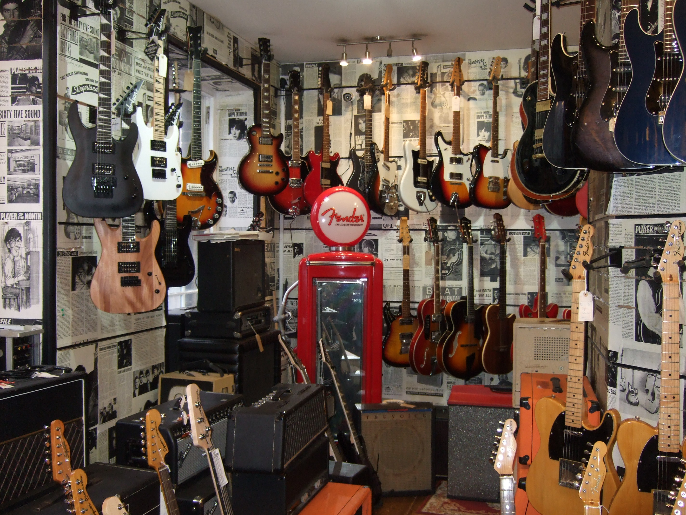
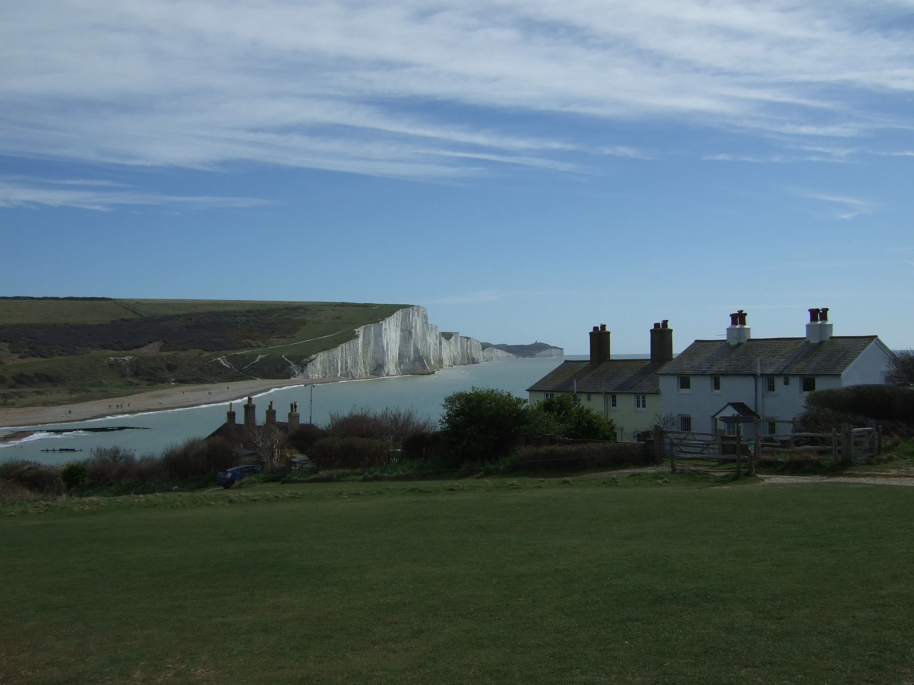
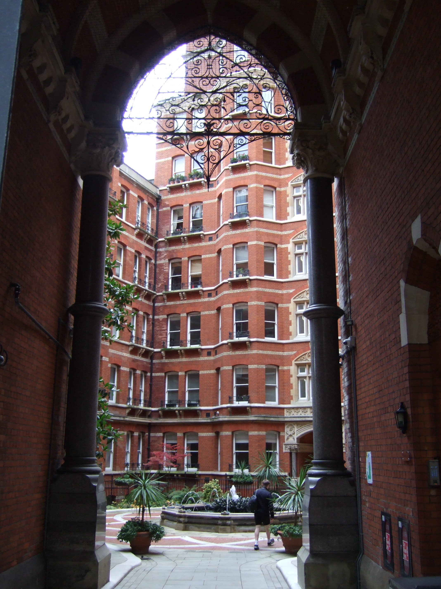
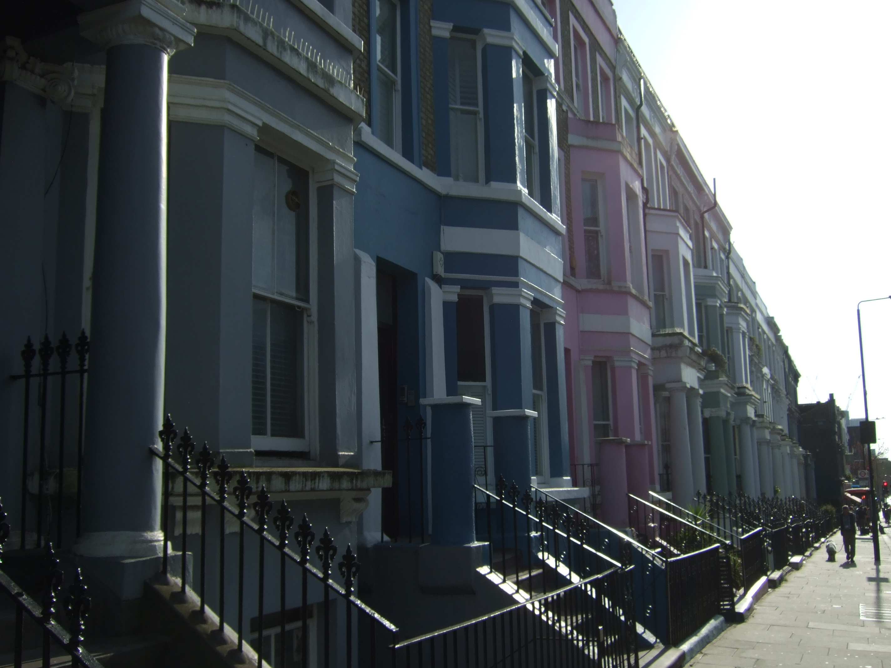
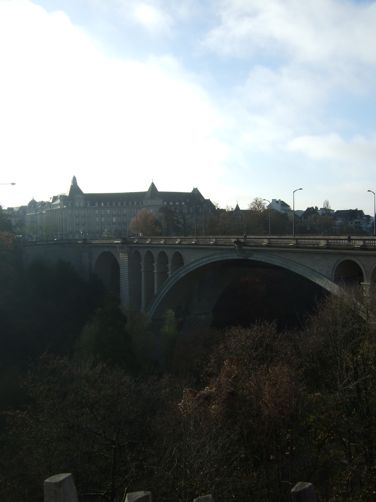
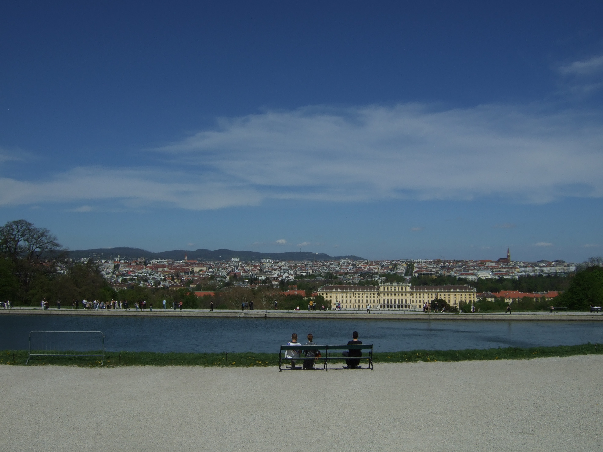

Outside of academics and my professional interests, I have a passion for music, which has been a big part of my life since I was a child. I play the guitar, bass guitar, violin, and a little bit of drums. Throughout K-12, I was involved in multiple orchestra programs for Violin where I got opportunities to perform at venues such as Lincoln Center and Caramoor. Throughout high school, I was in multiple bands where I played guitar. One was a local band based in Bedford, New York, called Puppets for Hire and a band based in Fairfield, Connecticut, called The Barrels, where I had my first opportunity to release music and write my own parts. I also have a music Instagram page where I share snippets of songs I enjoy playing, which you can check out here.
Other than music, I enjoy being active by bouldering and taking pictures on my digital cameras when on hikes and walks. I started these hobbies during my first year of college when I was abroad in London, England, and realized I been missing out on nature and the beauty of architecture and landscapes. I was lucky enough to visit many beautiful places in Britain and Europe, including Cambridge, Oxford, Paris, Amsterdam, Brussels, Luxembourg City, Prague, Vienna, and Budapest. Even walking to school in London everyday had great views of Tower Bridge and the Thames River, which I would often stop to take pictures of.






